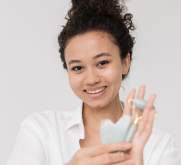

SEPHORA

From the Sephora Collection
Self care.
Self-served.
Soothe, cool and reduce puffiness on face and
body with a relaxing massage using our new
Rose Quartz Facial Roller.
Sephora Collection
Rose Quartz Facial Roller
147 34.1K
Highly rated by customers for: satisfaction, cooling
Introducing our exquisite Rose Quartz Facial Roller, a symbol of beauty and serenity. This timeless beauty tool is crafted from 100% genuine rose quartz, renowned for its healing properties and aesthetic elegance. Elevate your daily skincare regimen and embrace the harmonious balance of nature with this enchanting gemstone roller.
$22.00
$13.00
Sign in or create an account to
enjoy FREE standard shipping.
Shipping & Returns
Our roller features two distinct ends for a comprehensive facial massage. The larger roller is perfect for your face, while the smaller roller is ideal for delicate areas, such as the under-eye and neck.
The rolling motion of the rose quartz roller helps reduce puffiness, promote lymphatic drainage, and enhance the absorption of your skincare products. Your skin will look revitalized and radiant.
Sephora Blind Reviews
-
"A Game Changer for My Morning Routine"
“I can't start my day without my Sephora quartz roller and gua sha now. It's a complete game changer for reducing morning puffiness and giving my skin a fresh, rejuvenated feel. The design is sleek, the quartz is cool, and it's easy to use. Definitely worth the investment!”
Emily Rodriguez
-
"Luxury Meets Skincare"
“Sephora's rose quartz roller adds a touch of luxury to my skincare routine. The cool stone and gentle rolling action provide a soothing and relaxing experience. It's improved the overall texture of my skin, leaving it feeling refreshed. It is a little pricey, but the quality justifies it.”
Michael Chase
-
"Effective and Well-Crafted"
“This Sephora jade roller is a well-crafted skincare tool that's proven its effectiveness. It is versatile, with a larger and smaller end for different areas of the face. While it's a bit on the pricey side, it's an investment I don't regret for achieving more youthful-looking skin.”
Sarah Johnson